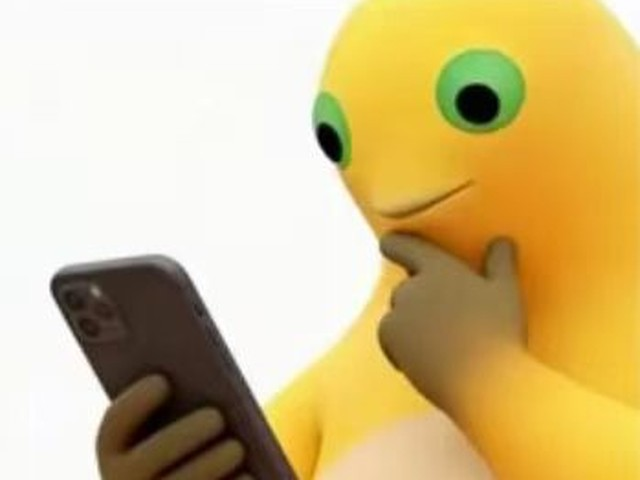
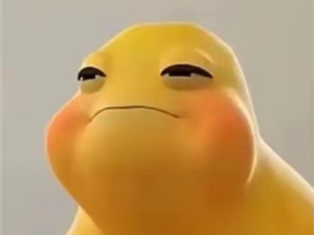
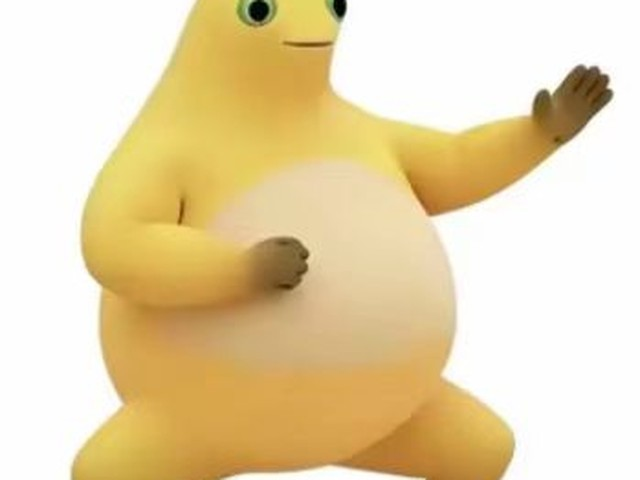
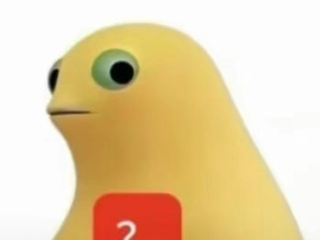
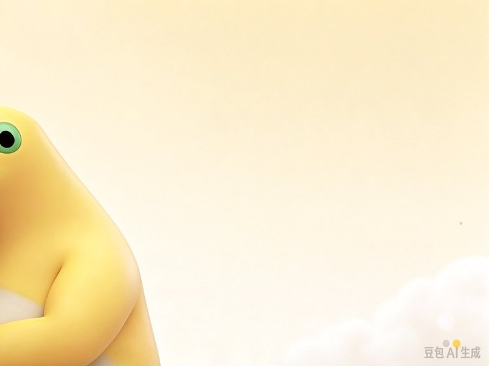
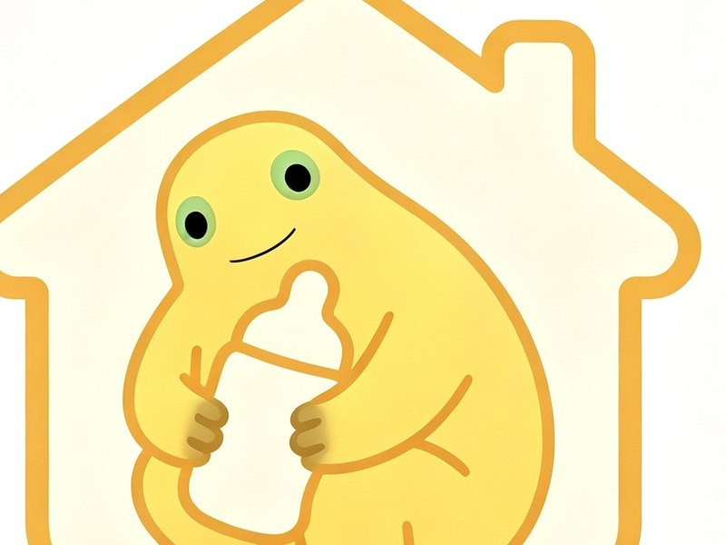

The eyes do the acting
Wide, level, and impossible to read. The viewer supplies the emotion, which is why the same image can be annoyed, patient, or deeply unimpressed.
Chapter 02 · The meme
The frog is not funny on its own. It becomes funny when it is placed exactly where a sentence should go.

Sent after a question you would rather not answer. The frog buys you three seconds and implies you are thinking hard.
Use when someone asks for a deadline.

A softer no. The mouth is already closed and the cheeks are already full, so the answer is coming out anyway — just not as a sentence.
Use when you are invited to something at eight in the morning.

One arm out, palm up, the body already turning away. The frog is not asking a question; it is finishing an argument nobody started.
Use when someone needs to know exactly why you are right.

No words, just the question mark held up like evidence. It works on bad plans, worse takes, and anything sent after midnight.
Use when a message needs to be read twice and still makes no sense.

Sent when you have already left the conversation but would like it on record that you thought about staying.
Use when someone asks whether you are still there.

The domestic edition. No pond, no story — just a house, a bottle, and a frog that has decided not to go out tonight.
Use when the evening has already been decided for you.
Images: fan-made Milk Frog pictures collected from the web. The character and the artwork belong to their creators; they are here as documentation, not as stock.
Anatomy
Three properties, no punchline required.
Wide, level, and impossible to read. The viewer supplies the emotion, which is why the same image can be annoyed, patient, or deeply unimpressed.
Nothing in the pose is urgent. The hand is at the chin, the shoulders are down. The frog is not reacting; it is deciding whether to.
It gives the character somewhere to be. A frog with a drink is a frog with plans, even if the plan is to sit quietly until the conversation ends.
Etiquette
A reaction image is shared property with a short memory. These four rules keep it usable for everyone.
A reaction image is a sentence with the adjectives removed.
Next